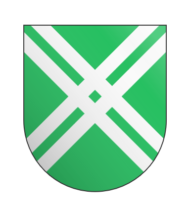

Crimson Iris

The headquarter unit of the Crimson Iris was deployed on a simple patrol on orders of Alize. The orginal objective was to simply engage in a basic scouting effort.
| 'Mech | Pilot | status |
|---|---|---|
| Wolverine | Colonel Alize | Alive |
| Commando | Major Derrel | Alive |
| Rifleman | Captain Royce | Alive |
| Alive | HMaster SPC Kiwior | 'Mech Damaged |
| Locust | Sergeant Josse | KIA/'Mech lost |
| Catapult | Private Mabel | KIA/'Mech lost |
| Archer | Corporal Yaromir | KIA/'Mech lost |
Despite the fact the Crimson Iris achieved a conventional victory, among their ranks it was considered a pyrric one. The losses were unexpected from a mere patrol, and morale took a heavy blow, doubly so because Mable was the unit's medical expert.
Clan Jade falcon
A rogue star from Clan Jade Falcon. The Star Commander had recently been snubbed of an honor they genuienly deserved, and thus they were glory hungry to get into combat once again. They sought broke ranks with their unit and searched for the closest possible enemy.
| 'Mech | Pilot | status |
|---|---|---|
| Madcat | Star Commander Bara | KIA/'Mech lost |
| Jenner | Warrior Lettel | 'Mech Damaged |
| Jenner | Warrior Bish | KIA/'Mech lost |
| Wasp | Warrior Kellen | 'Mech Damaged |
| Wasp | Warrior Monto | KIA/'Mech lost |
Clan Jade Falcon was handed a solid defeat. Despite the fact they ahieved a 1 to 1 kill ratio, the clans could typically achieve a 2-1 or even a 3-1 kill ratio, and thus this was an embrassing defeat for them, doubly since it was from the hands of a dishonored warrior who defied orders.